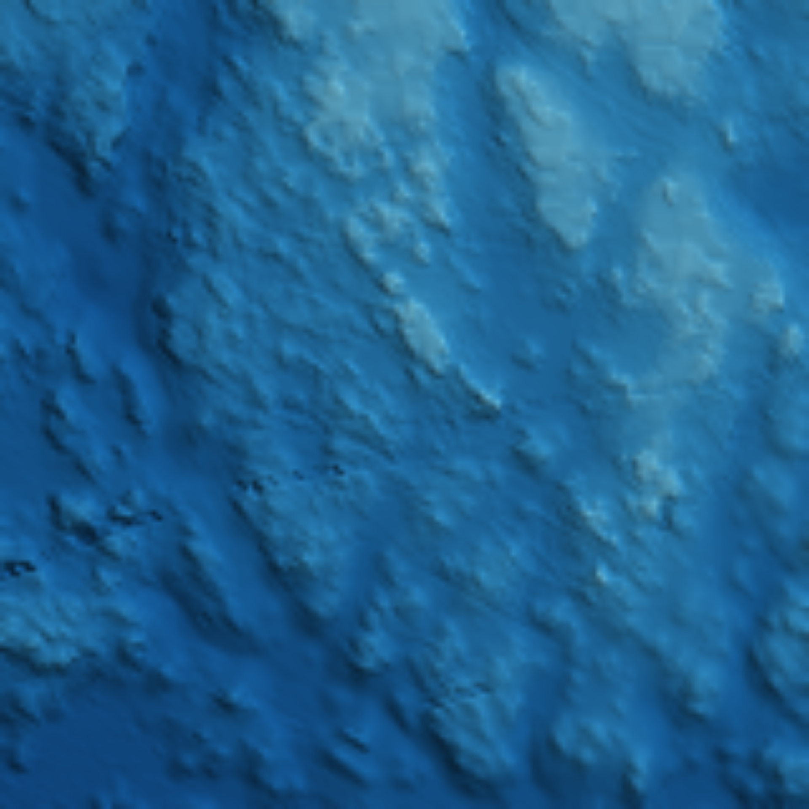

The whole Sound, baked on a laptop
Until now the public explorer sailed a clip of Sitka Sound. Today the full extent — 50,745,068 soundings — went through the pipeline on an RTX 4050 laptop GPU in Sitka and came out the other side as a verified chart pack. These are its receipts.

Stage 1The grid
50,745,068 soundings folded into one signed grid at 25 m — 3,277 × 2,933 cells covering the whole survey extent, depths from −1,279.9 m to +119.8 m. 47.6 seconds.
Stage 2The pack
3,266 tiles baked across four zoom levels. Every tile was decoded back and checked; the validator passed on the full pack and the overview. A public-safety audit of the publishable tree found zero violations — no fine tiles, no raw grid.
Stage 3The pictures
The beauty pass ran its hillshade engine — the ray-traced renderer is not on the machine yet, and the page says so rather than dressing the fallback up. Masters are owner-retained; the web sizes are here.
Receipts
| Machine | ProArt laptop, RTX 4050 (6 GB), WSL — the same laptop the fleet's resident loop trains on |
| Input | 50,745,068 soundings · lon −136.413…−135.060 · lat 56.764…57.422 · 2,238,893,007 bytes as exported |
| Stage 1 — grid | 47.56 s · grid 3,277 × 2,933 · inventory exact against the source file |
| Stage 2 — pack | 115.05 s · 3,266 tiles (z0 42 · z1 156 · z2 624 · z3 2,444) · 262,155,576 bytes · all tiles decode-verified · validator PASS |
| Overview | 198 tiles (z0+z1) · 15,435,024 bytes · content hash sha256:8bd7ef09b950808210ee584a5a56d8a3211d9ca3dc7fc42ef130ace80da0201f |
| Stage 3 — beauty | hillshade fallback (no Blender on the box) · master 7680 × 5883 owner-retained · web 1920 × 1471 published here |
| Split | public-safe 19,694,333 bytes · owner-retained 478,453,096 bytes — the full-resolution pack has not been published |

Are we there yet? No — and here is exactly where "there" stands
What is deployed: the full-extent pack exists, is verified tile by tile, and its overview and pictures are on this page. The bake is no longer the bottleneck — the whole job took under four minutes of GPU time.
What is not deployed yet: the playable explorer still sails the earlier Sitka clip; wiring it to the full pack is the next job, not a done one. The depths are as exported — the export's datum and tide handling are still unverified, so nothing here is a chart you should navigate by. And the beauty master is a hillshade, not the ray-traced render the pipeline specced, because the renderer is not installed on the laptop yet.
Early times, then — but the early part that remains is wiring and verification, not invention. The mountain of soundings is a chart pack now.